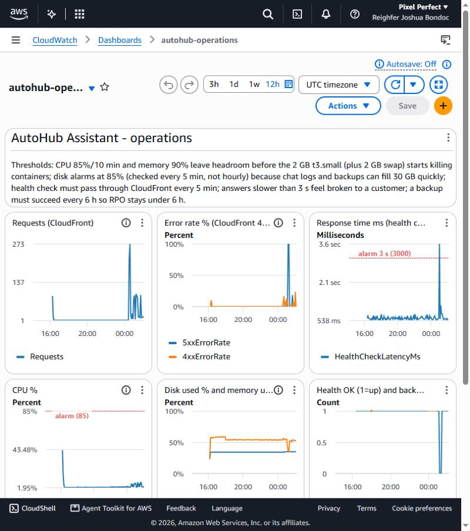
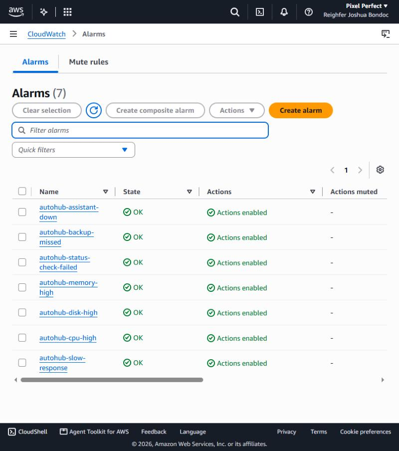
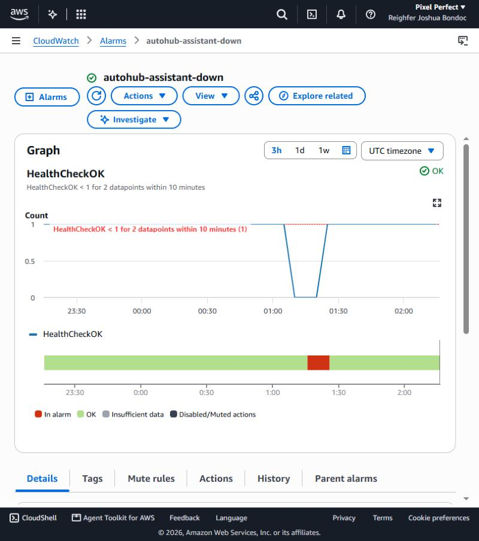
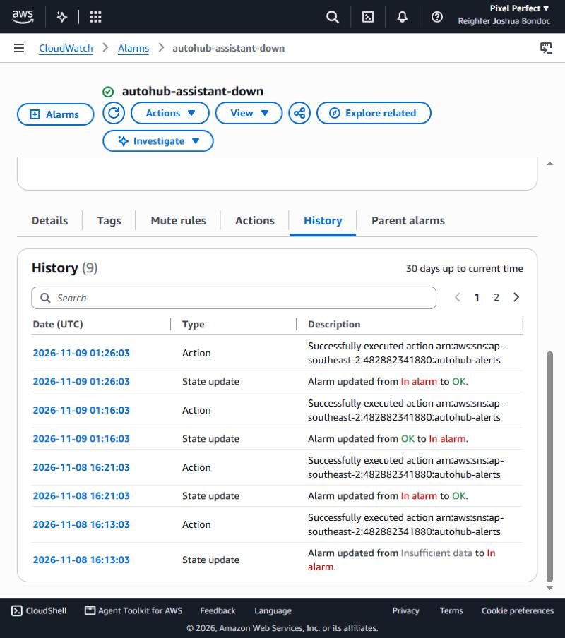
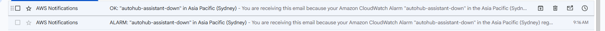
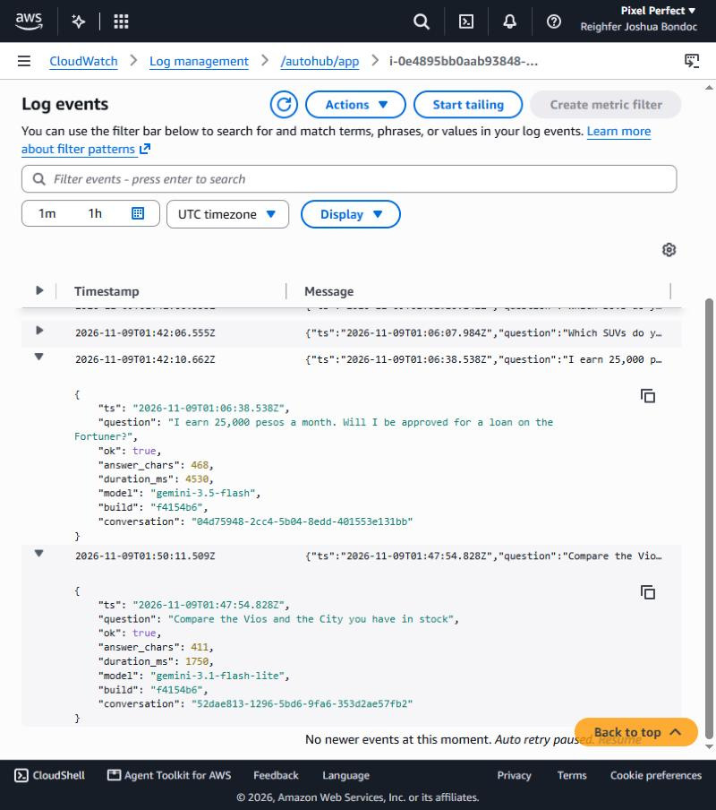
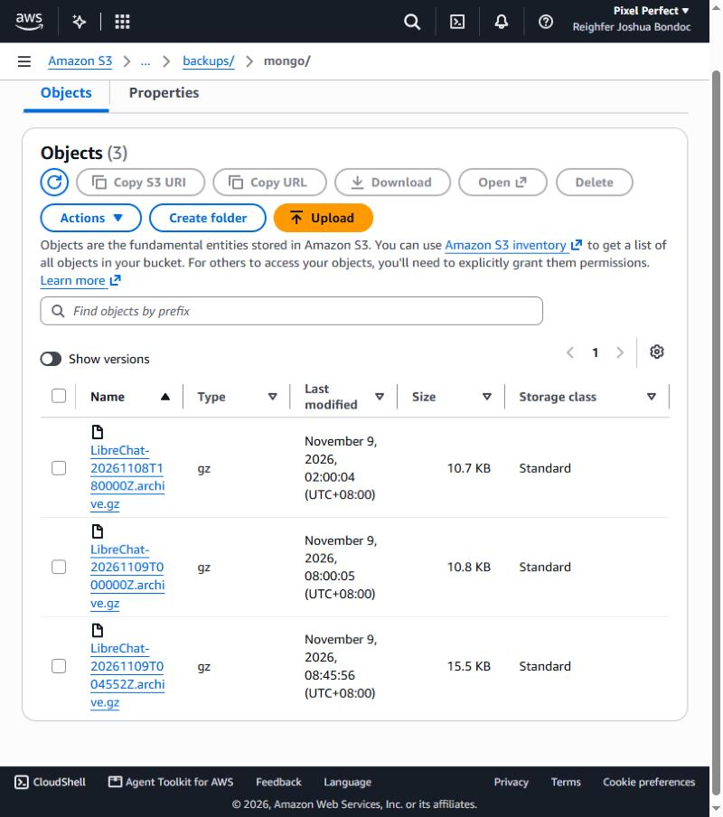
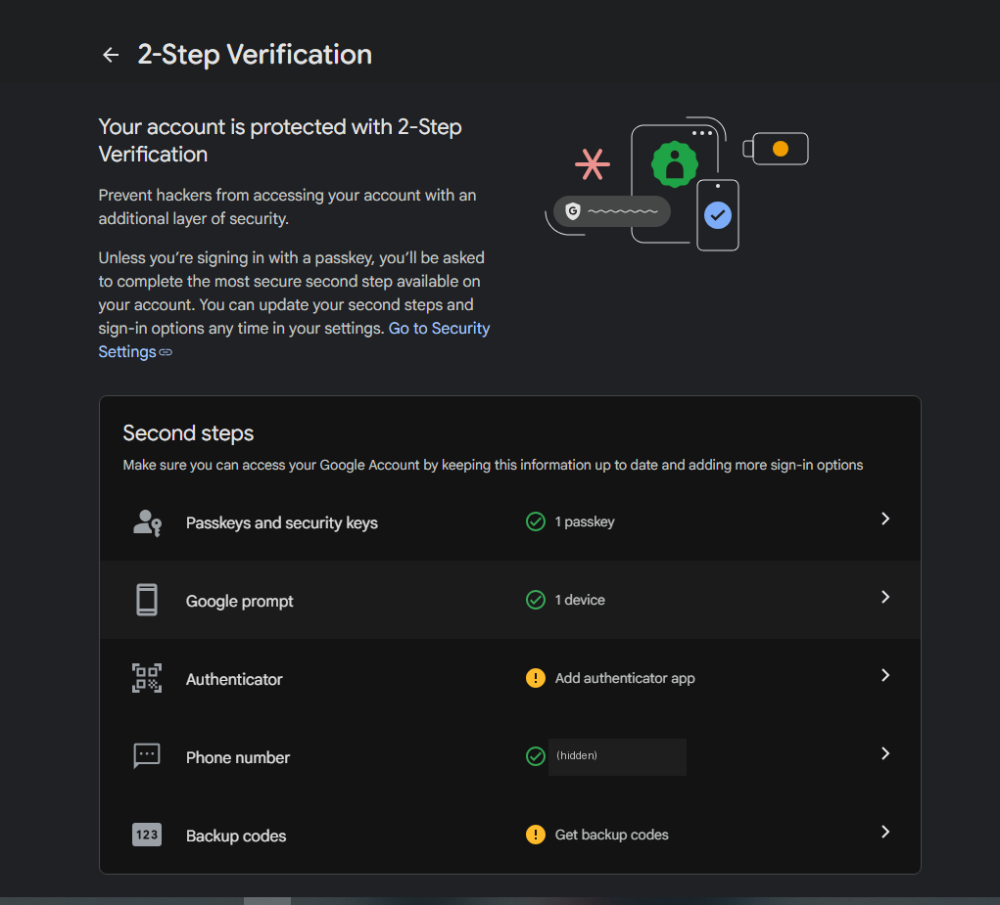
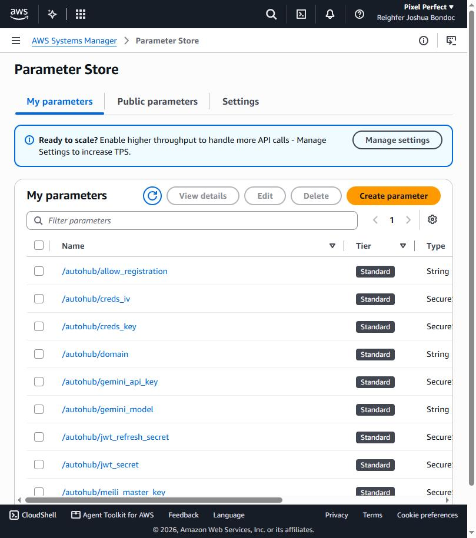

WS-B · WS-C · WS-D
Monitoring, backup and restore, security
Monitoring (WS-B)
Dashboard autohub-operations (E-06)

Why these thresholds, in one sentence (as written on the dashboard): CPU 85% for 10 minutes and memory 90% leave headroom before a small instance starts killing containers. Disk alarms at 85%, checked every 5 minutes, because chat logs and backups can fill 30 GB quickly. The health check must pass through CloudFront every 5 minutes. Answers slower than 3 s feel broken to a customer. A backup must succeed every 6 hours so the RPO stays under 6 hours.
Seven alarms, all emailing the operator (E-07)
| Alarm | Metric | Threshold | Appendix A equivalent |
|---|---|---|---|
| autohub-assistant-down | AutoHub/HealthCheckOK (min) | < 1 for 2 × 5 min; missing data counts as failing | RequestCount drop / 5XX (we have no load balancer) |
| autohub-slow-response | AutoHub/HealthCheckLatencyMs (avg) | > 3000 ms for 3 × 5 min | TargetResponseTime > 3 s |
| autohub-cpu-high | AWS/EC2 CPUUtilization | > 85% for 2 × 5 min | CPUUtilization |
| autohub-status-check-failed | AWS/EC2 StatusCheckFailed | > 0 for 2 × 1 min | StatusCheckFailed |
| autohub-memory-high | CWAgent mem_used_percent | > 90% for 5 min | MemoryUtilization |
| autohub-disk-high | CWAgent disk_used_percent | > 85% for 5 min | DiskSpaceUsed (we check every 5 min, not hourly) |
| autohub-backup-missed | AutoHub/BackupSucceeded (sum) | < 1 over 7 × 1 h; missing data counts as failing | Replaces the RDS rows (our database is a container) |

A real alert arrived (E-08)
On 9 Nov 2026 at 01:07:05 UTC we stopped the LibreChat container on purpose. The health check failed at 01:10 and 01:15. The alarm went from OK to ALARM at 01:16:03 UTC and SNS emailed the operator. We restored service at 01:20:45, which sent the OK email.
$ aws cloudwatch describe-alarm-history --alarm-name autohub-assistant-down --history-item-type StateUpdate
2026-11-09T01:26:03 Alarm updated from ALARM to OK
2026-11-09T01:16:03.441000+00:00 Alarm updated from OK to ALARM
2026-11-08T16:21:03.437000+00:00 Alarm updated from ALARM to OK
2026-11-08T16:13:03.437000+00:00 Alarm updated from INSUFFICIENT_DATA to ALARM autohub-assistant-down alarm graph: HealthCheckOK drops to 0 and the red band marks the ALARM period. |
 |

Logs and request logging (E-09)
Four CloudWatch log groups with 14-day retention:
/autohub/app (LibreChat debug log, one entry per request, with the model and endpoint used),
/autohub/mongodb (database container), /autohub/automation (health check, backup, restore, evaluation) and
/autohub/deploy (bootstrap and each deploy, with the LibreChat build).
Every health-check line records the outcome, the HTTP codes and the duration:
2026-11-09T00:25:03+00:00 health ok=1 local_http=200 public_http=200 latency_ms=714
2026-11-09T01:10:04+00:00 health ok=0 local_http=000 public_http=504 latency_ms=1138 <- planned outage
2026-11-09T01:05:32+00:00 [deploy] deployed build f4154b6
requests stream in /autohub/app: one JSON line per answer with time, question, success, answer length, duration and model. Note the model change from gemini-3.5-flash to gemini-3.1-flash-lite after INC-05.Backup and restore (WS-C)
What we would have to restore
| Item | Where it lives | How it is protected |
|---|---|---|
| MongoDB database (users, conversations, messages) | Docker volume on the EC2 disk | mongodump to S3 every 6 h, kept 8 days |
| Dealership content (inventory, policies) | S3 content/ and Git | S3 versioning (old versions kept 30 days) and the Git history |
| Configuration and deploy scripts | Git repository, copied to S3 app/ | Git history. The whole stack rebuilds with 01–04 scripts |
| Secrets (Gemini key, JWT and credential keys, Meilisearch key) | Parameter Store /autohub/* | Stored by AWS, separate from the instance. Losing the instance does not lose them |
| Search index | Meilisearch volume | Not backed up: LibreChat rebuilds it from MongoDB |
Backups configured (E-10)
$ ./ops.sh backup
2026-11-09T00:45:55+00:00 backup OK s3://autohub-content-482882341880-ap-southeast-2/backups/mongo/LibreChat-20261109T004552Z.archive.gz size=15835B
S3 lifecycle: backups/ -> expire after 8 days (brief: at least 7)
content/ -> non-current versions expire after 30 days, versioning Enabled
backups/mongo/): the scheduled 18:00 and 00:00 UTC runs and the manual 00:45 UTC run used for the restore test (times shown in UTC+8).The restore test (E-11)
$ ./ops.sh restore-verify (9 Nov 2026, into a throw-away MongoDB container)
[restore-verify] using s3://…/backups/mongo/LibreChat-20261109T004552Z.archive.gz
74 document(s) restored successfully. 0 document(s) failed to restore.
LIVE database: users=1 conversations=2 messages=6
RESTORED copy: users=1 conversations=2 messages=6
[restore-verify] finished in 32 s (use this for RTO)The restored copy had exactly the same users, conversations and messages as the live database. For a full restore into the running system,
./ops.sh restore-live takes a safety copy first, restores with --drop, and restarts the app so you can log in and see the chats.
RPO and RTO
RPO, 6 hours: backups run at 00:00, 06:00, 12:00 and 18:00 UTC, so in the worst case we lose up to 6 hours of conversations. The dealership content and settings lose nothing, because they live in Git, S3 and Parameter Store.
RTO, about 1 minute for the data and about 20 minutes for the whole server: a database restore took 32 s. Rebuilding a lost instance with 02-launch-ec2.sh and then restoring takes about 15–20 minutes, mostly waiting for Docker images.
Security (WS-D)
| Control | Before (stock LibreChat) | After (AutoHub) | Risk it addresses |
|---|---|---|---|
| Secrets | Plain .env with public sample JWT/credential keys | 6 SecureStrings in Parameter Store, fresh random values, read at start-up. The .env is generated on the server with mode 600 and never committed | Stolen code or a stolen repo cannot reveal keys or forge logins |
| Key validation | Whatever was pasted got stored | The key is tested with Google before it is saved | A broken or doubled key cannot take the assistant down silently (INC-02) |
| Network exposure | Port 3080 open to anyone | Security group allows 3080 only from CloudFront's managed prefix list. No port 22 | Nobody can reach the server directly or brute-force SSH |
| Admin access to the server | SSH key | Systems Manager Session Manager and Run Command, logged in CloudTrail | No SSH keys to leak, and every remote command is audited |
| Instance permissions | n/a | Role can read only /autohub/* and its own bucket paths, and write only backups/. KMS decrypt only via SSM | A compromised app cannot read other secrets or change content |
| Transport | HTTP | HTTPS at CloudFront, with HTTP redirected to HTTPS | Passwords and chats are encrypted between the customer and AWS |
| Encryption at rest | none | EBS volume encrypted. Both S3 buckets SSE-S3 and blocked from public access | A copied disk or bucket object is unreadable |
| Instance metadata | IMDSv1 allowed | IMDSv2 required | SSRF attacks cannot steal the role credentials |
| Audit trail | none | CloudTrail autohub-trail logging in ap-southeast-2, kept 90 days | We can see who changed what, and when |
| Accounts | Open registration | Registration closed after the operator's account was made | Strangers cannot create accounts and burn the AI quota |
| Personal data | n/a | All content invented. The system prompt refuses to collect names, addresses, ID or income. Evaluation case Q27 checks this | Nothing personal reaches Google (§1.2 check) |
| Cost | none | $10/month budget with email at 50% actual and 100% forecast | A runaway loop is caught before it becomes a bill |
MFA and console users (E-12)
The account is used by one person. Console sign-in is federated through the role AccountFullAccessRole, so
aws iam list-users returns no IAM users (and list-virtual-mfa-devices returns 0), so there is no shared administrator login.
MFA on the operator's sign-in is shown in the screenshot below.
Moving to IAM Identity Center with a least-privilege permission set is the first gap on the
Well-Architected review.

Secrets in Parameter Store (E-13)
$ aws ssm get-parameters-by-path --path /autohub --query 'Parameters[].[Name,Type]' --output table
/autohub/allow_registration String
/autohub/creds_iv SecureString
/autohub/creds_key SecureString
/autohub/domain String
/autohub/gemini_api_key SecureString
/autohub/gemini_model String
/autohub/jwt_refresh_secret SecureString
/autohub/jwt_secret SecureString
/autohub/meili_master_key SecureString